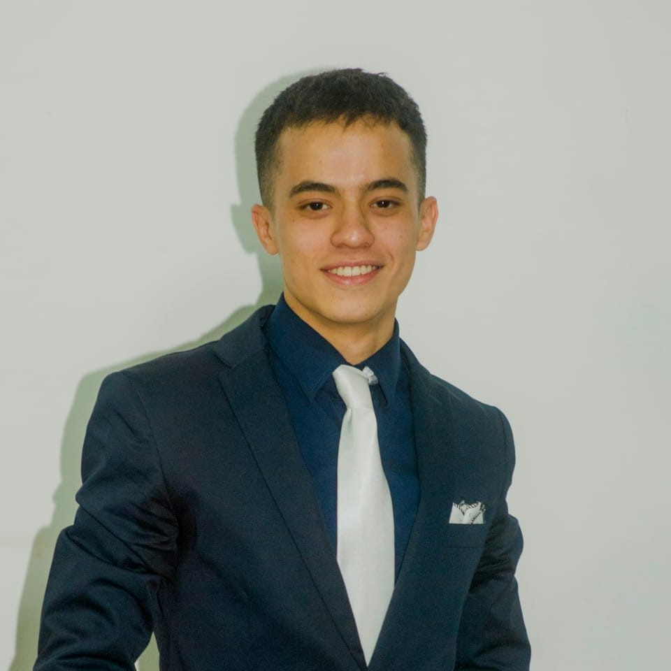

-
Tomas RiveroDesarrollador de softwareHola!üëãüèª A los 15 a√±os, en el transcurso de la secundaria, se despert√≥ mi deseo de programar y empec√© a capacitarme sobre el tema. Actualmente estoy cursando mi primer a√±o en la facultad y sigo aprendiendo constantemente mediante cursos y videos en l√≠nea. Poseo conocimientos sobre HTML, CSS (Bootstrap - Styled Components), JavaScript (Nodejs, React), Python y bases de datos (MongoDB, MySQL). üíª Mi principal objetivo es descubrir nuevos caminos relacionados al desarrollo de software brindando mis conocimientos mientras que a su vez me capacito en diferentes tecnolog√≠as y sumo experiencias a mi futuro. Poseo buenas habilidades de comunicaci√≥n e autoaprendizaje que me permiten mantener y mejorar mi intelecto.üòÑ
üëãüèªHola! A los 15 a√±os, en el transcurso de la secundaria, se despert√≥ mi deseo de programar y empec√© a capacitarme sobre el tema. Actualmente estoy cursando mi primer a√±o en la facultad y sigo aprendiendo constantemente mediante cursos y videos en l√≠nea.
ü뮂ÄçüíªPoseo conocimientos sobre HTML, CSS (Bootstrap - Styled Components), JavaScript (Nodejs, React), Python y bases de datos (MongoDB, MySQL). üíª
üòÑMi principal objetivo es descubrir nuevos caminos relacionados al desarrollo de software brindando mis conocimientos mientras que a su vez me capacito en diferentes tecnolog√≠as y sumo experiencias a mi futuro. Poseo buenas habilidades de comunicaci√≥n e autoaprendizaje que me permiten mantener y mejorar mi intelecto.logo_linkedinLinkedInenvelope_open_fillGmail -
Lautaro GonzalezDesarrollador de softwareüë㬰Hola! Me llamo Lautaro, desde chico me adentr√© en el mundo de la informática arreglando computadoras y configurando routers.
ü뮂ÄçüíªMe apasiona la programaci√≥n, desde 2020 me inicie programando videojuegos en Unity donde cree un juego para Android, luego de pasar por otros lenguajes como java, comenc√© a programar en JavaScript donde comenc√© a hacer proyectos y practicar en forma de hobby. Actualmente, me encuentro cursando la carrera de ‚ÄúT√©cnico Universitario En Programaci√≥n‚Äù en la Universidad Austral de Rosario, donde espero mejorar mis capacidades y seguir creciendo tanto personal como profesionalmente.üë㬰Hola! Me llamo Lautaro, desde chico me adentr√© en el mundo de la informática arreglando computadoras y configurando routers.
ü뮂ÄçüíªAdemás de las redes me apasiona la programaci√≥n, desde 2020 me inicie programando videojuegos en Unity donde cree un juego para Android, luego de pasar por otros lenguajes como java, comenc√© a programar en JavaScript donde comenc√© a hacer proyectos y practicar en forma de hobby. Actualmente, me encuentro cursando la carrera de ‚ÄúT√©cnico Universitario En Programaci√≥n‚Äù en la Universidad Austral de Rosario, donde espero mejorar mis capacidades y seguir creciendo tanto personal como profesionalmente.logo_linkedinLinkedInenvelope_open_fillGmail